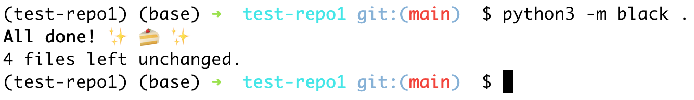

# INFO 450 Spring 2021 # Week 2 ## Development Processes --- # Homework Review Did you get me your github repository? I hope so! --- # Tonight's Agenda * Github overview * CICD (Continuous integration, continuous deployment) --- # Version Control Software: https://www.atlassian.com/git/tutorials/what-is-version-control ``` Version control systems are a category of software tools that help a software team manage changes to source code over time. Version control software keeps track of every modification to the code in a special kind of database. If a mistake is made, developers can turn back the clock and compare earlier versions of the code to help fix the mistake while minimizing disruption to all team members. ``` * Github Github.com is a SaaS platform for hosting source code for version control. --- # How do we use Version Control? Version Control / git support many capabilities to help us manage our projects. * Version control - What was my code yesterday? * Branching - "Feature" branch to isolate changes from other developers * Collaboration - Multiple developers can safely work on the same code * Tagging/Labeling - Mark some code for a release or a point in time to be able to roll back with confidence. --- # How will we use Github? Install Visual Studio Code Install (it may already be installed) 'git' plugin, NOT github plugin: * https://code.visualstudio.com/docs/editor/versioncontrol (use Git plugin, not Github plugin) --- # Things to watch for in demo You will be 'forking' a repository of mine each week for homework You will make your changes on your laptop/computer and pushing the changes back to github When you're confident it works, you will create a 'pull request' for me to merge it back into my repository --- # Live Demo of using Github via VS Code * clone * add * commit * get * push * merge * branch * Pull Request in Github.com --- # Github questions? --- # CICD - Build pipelines The greatest innovation in software development EVER is an automatic build pipeline. You write test cases that truly test and validate your code. Write your test cases to make yourself comfortable with automatic deployment of your application, to <strong>production</strong>. production - live traffic, customer facing, no going back (caveat, you can always go back, but it's embarrassing) --- # Tools The most popular tools for building pipelines are things like Jenkins, Travis CI, Github Actions (new, and what we'll use) Our pipelines will: * Validate coding standards, PEP-8, naming conventions, etc. * isort * pylint * black * Build Your Code * valid python * build a 'package' (we'll learn about that soon) * run <strong>pytest</strong> for test cases * PEP-8: https://www.python.org/dev/peps/pep-0008/ ## <a href="https://github.com/vcu-chfauerbach/test-repo1/actions" target="_blank">Embarrassing</a>, but show students how long it took me to get a working 'BASIC' example of python --- # Python code organization We will start out using 'pytest' to execute your application tests. https://docs.pytest.org/en/latest/goodpractices.html ``` setup.py mypkg/ __init__.py app.py view.py tests/ test_app.py test_view.py ... ``` * setup.py - Information about your program. This is your application name or module name. matches the top level for code - 'mypkg' in this example * __init__.py - for us, it will mostly be a blank file, but required to indicate 'mypkg' is a python... package * tests - This is where we will build our unit tests --- # Unit Tests In computer programming, unit testing is a software testing method by which individual units of source code—sets of one or more computer program modules together with associated control data, usage procedures, and operating procedures—are tested to determine whether they are fit for use. https://en.wikipedia.org/wiki/Unit_testing - Testing small units of code, usually functions. - Known inputs, known outputs to make sure you don't break your functions - Always test edge cases, boundaries, etc. - For instance, if you have a function that is expected to add two numbers, what happens if you pass Strings to the function? --- # Simple test case <a href="example_test.py" target="_blank">example_test.py</a>: ```python """File to hold a class definition to test code""" import unittest class TestListElements(unittest.TestCase): """Holding class to organize our test cases.""" def test_sorting(): """Test to make sure the sorting function works with a simple list""" known_input = [5,4,1,2,3] expected_output = [1,2,3,4,5] assertListEqual(known_input, known_output) ``` --- # pylint https://www.pylint.org/ * Coding Standard * checking line-code's length, * checking if variable names are well-formed according to your coding standard * checking if imported modules are used * Error detection * checking if declared interfaces are truly implemented * checking if modules are imported Pylint is an incredibly useful tool for static code analysis. It provides a simple score out of 10, a detailed output on what to fix, and the ability to ignore things you do not believe in. - Medium <a href=" https://doedotdev.medium.com/pylint-static-code-analysis-python-script-with-adjustable-threshold-b0d6d2c8647b#:~:text=Pylint%20is%20an%20incredibly%20useful,you%20do%20not%20believe%20in." target="_blank">post</a> by dotdotdev ## Part of grading will be 'your' pylint score. 10 is best, less is ... less best. --- # isort https://pypi.org/project/isort/ <small>isort is a Python utility / library to sort imports alphabetically, and automatically separated into sections and by type. It provides a command line utility, Python library and plugins for various editors to quickly sort all your imports.</small> From: ```python import requests import sys import os ``` To: ```python import os import sys import requests ``` ## Part of grading will be isort. Our CICD process will NOT allow improperly formatted imports. --- # black https://github.com/psf/black Black is the uncompromising Python code formatter. By using it, you agree to cede control over minutiae of hand-formatting. In return, Black gives you speed, determinism, and freedom from pycodestyle nagging about formatting. You will save time and mental energy for more important matters. Blackened code looks the same regardless of the project you're reading. Formatting becomes transparent after a while and you can focus on the content instead.  ## Part of grading will be black. Our CICD process will NOT allow code that needs to be 'blackened' --- # pytest https://docs.pytest.org/en/stable/ The pytest framework makes it easy to write small tests, yet scales to support complex functional testing for applications and libraries. ```python # content of test_sample.py def inc(x): return x + 1 def test_answer(): assert inc(3) == 5 ``` FAILED --- #Output ```bash $ pytest =========================== test session starts ============================ platform linux -- Python 3.x.y, pytest-6.x.y, py-1.x.y, pluggy-0.x.y cachedir: $PYTHON_PREFIX/.pytest_cache rootdir: $REGENDOC_TMPDIR collected 1 item test_sample.py F [100%] ================================= FAILURES ================================= _______________________________ test_answer ________________________________ def test_answer(): > assert inc(3) == 5 E assert 4 == 5 E + where 4 = inc(3) test_sample.py:6: AssertionError ========================= short test summary info ========================== FAILED test_sample.py::test_answer - assert 4 == 5 ============================ 1 failed in 0.12s ============================= ``` ### Part of grading will be pytest. Our CICD process will allow allow partial failures will be allowed but will be the major determination of your grades. --- # Install these tools For these slides and in class, I will be showing you how to manage a Python environment with 'pipenv'. You are welcome to use `pipenv` or you can use Anaconda. I'm a command line person, so, that's my default ```bash $ pipenv --python 3.8 $ pipenv shell $ pipenv install pytest $ pipenv install black==20.8b1 $ pipenv install isort $ pipenv install pylint $ pipenv run black . $ pipenv run isort . $ pipenv run pytest . ``` --- # setup.py now let's make that top level setup.py file: ```bash $ cd test-repo1 $ cat setup.py """Setup file to describe my project.""" from setuptools import find_packages, setup setup( name="testrepo1", version="0.1", description="Test repository", author="Chris Fauerbach", author_email="chfauerbach@vcu.edu", packages=find_packages(), ) ``` --- ---